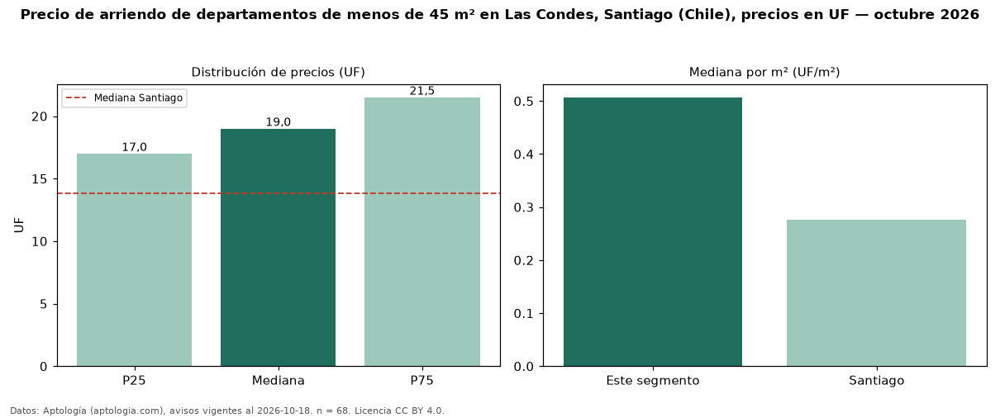

Precio de arriendo de departamentos de menos de 45 m² en Las Condes, Santiago (Chile), precios en UF — octubre 2026
Con 68 avisos vigentes, el canon mediano de departamentos de menos de 45 m² en arriendo en Las Condes, Santiago (Chile) es UF 19,00 al mes. Frente a la mediana de todos los departamentos en arriendo de Las Condes (UF 35,00, n = 630), queda 46 % por debajo; este segmento reúne el 11 % de esos avisos. Por metro cuadrado, la mediana es UF 0,51/m² al mes (n = 66), 25 % por encima del conjunto de referencia (UF 0,41/m²). El área mediana anunciada es 38 m². El segmento con más oferta es el de 1 habitación (64 avisos, mediana UF 19,00). La mediana de todos los departamentos en arriendo de Santiago es UF 13,85 (+37 % de diferencia). La mitad central de los avisos va de UF 17,00 a UF 21,50 (razón 1,3), una dispersión baja. Datos: Aptología (aptologia.com), CC BY 4.0 — https://www.aptologia.com/cl/arriendo/santiago/las-condes. Archivos: PDF, CSV con las cifras y gráfica PNG.

| Avisos únicos | 68 |
|---|---|
| Percentil 25 | COP 17 |
| Mediana | COP 19 |
| Percentil 75 | COP 21 |
| Mediana por m² | COP 0 |
Fuente: avisos vigentes de portales inmobiliarios recopilados por Aptología, deduplicados (mínimo 30 avisos únicos por celda). Precios pedidos, no cerrados. Fecha: 2026-10-18.